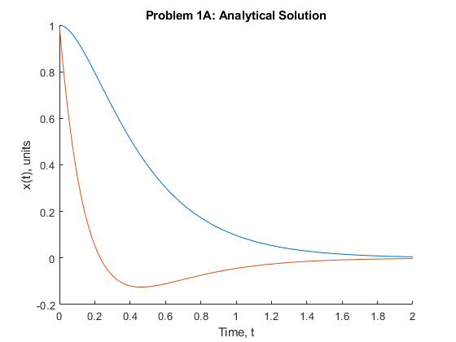
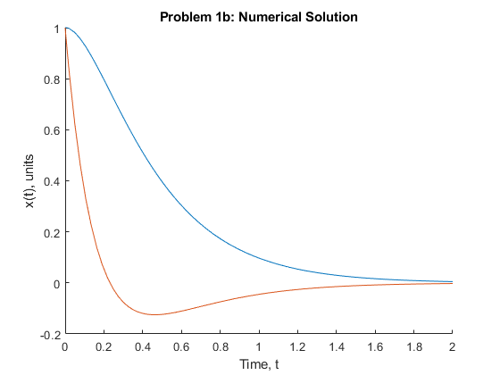
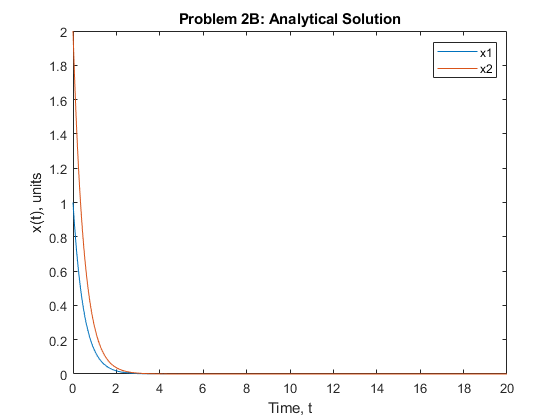
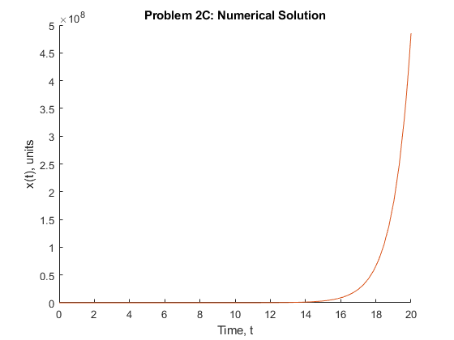
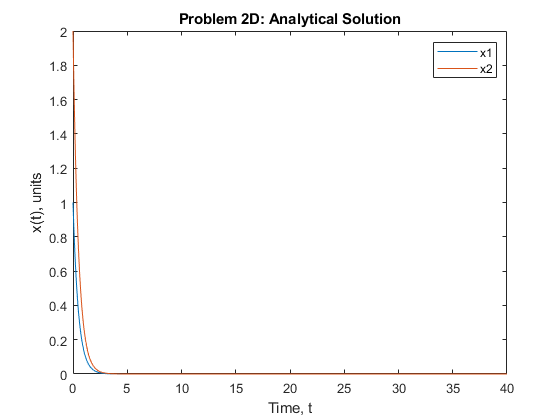
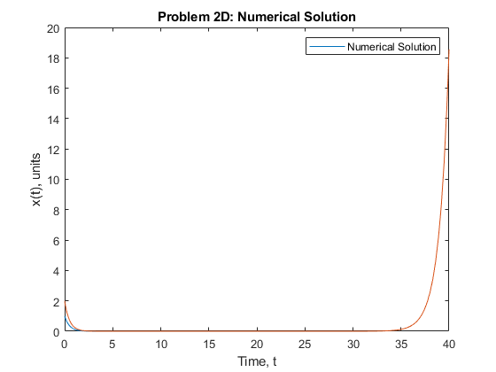

Contents
close all;
clear;
clc;
Problem 1B
X = [1;1];
t_a = [0:0.01:2];
x1_a = 2*exp(-3*t_a) + -exp(-6*t_a);
x2_a = -exp(-3*t_a)+ 2*exp(-6*t_a);
figure
hold on
plot(t_a, x1_a, t_a, x2_a);
title("Problem 1A: Analytical Solution");
xlabel("Time, t")
ylabel("x(t), units")
hold off
figure
hold on
[t,x] = ode45(@problem1, [0,2], X);
x1 = x(:,1);
x2 = x(:,2);
plot (t,x1,t,x2)
title("Problem 1b: Numerical Solution");
xlabel("Time, t")
ylabel("x(t), units")
hold off
 
Problem 2B
t = [0:0.01:20];
x1 = exp(-2*t);
x2 = 2.*exp(-2*t);
figure
plot(t,x1,t,x2);
title ("Problem 2B: Analytical Solution");
legend("x1","x2");
xlabel("Time, t")
ylabel("x(t), units")

Problem 2C
figure
hold on
[t,x] = ode45(@problem2, [0,20], X);
x1 = x(:,1);
x2 = x(:,2);
plot (t,x1,t,x2)
title("Problem 2C: Numerical Solution");
xlabel("Time, t")
ylabel("x(t), units")
hold off

Problem 2d
i = 40;
t_a = [0:0.01:i];
x1_a = exp(-2*t_a);
x2_a = 2*exp(-2*t_a);
figure
plot(t_a, x1_a, t_a,x2_a);
title("Problem 2D: Analytical Solution");
legend("x1","x2");
xlabel("Time, t")
ylabel("x(t), units")
X = [1:2];
[t,x] = ode45(@problem2, [0,i], X);
x1 = x(:,1);
x2 = x(:,2);
figure
plot(t,x1,t,x2)
title("Problem 2D: Numerical Solution")
legend("Numerical Solution")
xlabel("Time, t")
ylabel("x(t), units")
 